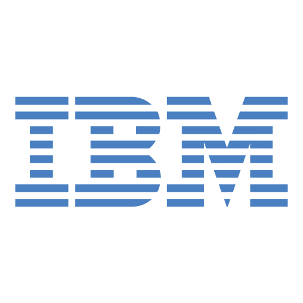

🌎
FR
IBM MAS 9.1
Official IBM Doc · Feb 2026
⚲
IBM MAS 9.1 · 11 Sections
Select a section
✦ Summarise
maxTeam Assistant
Online
✕
Recommended reading
⌃
🏗️
Overview & Architecture
📋
Planning & Prerequisites
⚙️
Installation Methods
📦
Apps & Licensing
Your maxTeam Assistant
Online
Hi there! Ask me anything about IBM MAS 9.1 — architecture, installation, licensing or any feature.
AppPoints licensing?
What's new in 9.1?
Install on AWS?
What is Predict?
Hardware sizing?
Upgrade from MAM 7?
✕
maxTeam Assistant
👋 Need help navigating IBM MAS 9.1? Click me to ask anything!